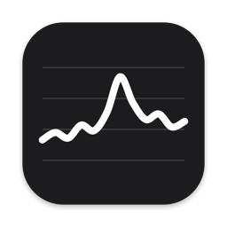

Processeur
Les cinq dernières minutes en continu, sur une échelle fixe de 0 à 100 % : un pic se voit tout de suite, et ne se confond jamais avec un Mac au repos.

StatsMoniteur système pour Mac
Processeur, réseau, mémoire et disque : quatre petits graphiques en direct dans la barre des menus. Un clic pour le détail.
Toujours visibles, jamais encombrants : en noir et blanc comme la barre des menus, en clair comme en sombre.
Les cinq dernières minutes en continu, sur une échelle fixe de 0 à 100 % : un pic se voit tout de suite, et ne se confond jamais avec un Mac au repos.
L'envoi en haut, la réception en bas. La boucle locale, les VPN et les machines virtuelles sont écartés : rien n'est compté deux fois.
Une jauge remplie à la part de mémoire utilisée, comptée comme dans le Moniteur d'activité.
La place occupée sur le disque de démarrage. L'espace purgeable compte comme libre, comme dans le Finder.
⌃⌥⌘S ouvre le détail depuis n'importe quelle app, esc le referme.
Le détail classe les cinq apps qui pèsent le plus, en processeur, mémoire, réseau ou disque. Chacune compte tout ce qu'elle a lancé : ses assistants, ses outils, ses terminaux. Vos propres apps se quittent d'un clic.
Pas de fenêtre, pas d'icône dans le Dock. Stats s'ouvre à la connexion, se met à jour tout seul et se fait oublier.
Signé et notarisé par Apple, sous licence MIT. Trois façons de l'installer.
Ouvrez Stats.dmg et glissez Stats dans Applications. Il se met ensuite à jour tout seul.
Une commande dans le Terminal :
brew install --cask moifort/tap/minimal-stats
Avec les outils en ligne de commande de Xcode :
git clone https://github.com/moifort/minimal-stats
cd minimal-stats && make install
Parce que Stats ne coûte rien à faire tourner : pas de serveur, pas de compte. Son code est public sur GitHub, sous licence MIT.
Non. Tout est mesuré sur votre Mac et y reste. La seule connexion de Stats est la vérification des mises à jour auprès de GitHub, une fois par jour. Confidentialité
macOS 26 ou plus récent, sur un Mac à puce Apple, du M1 aux plus récents.
Stats compte en part de tout le Mac, de 0 à 100 %. Le Moniteur d'activité compte par cœur, jusqu'à 800 % sur huit cœurs : les deux disent la même chose.
Clic droit sur les graphiques : « Quit Stats » le ferme, « Uninstall… » retire l'ouverture à la connexion et met l'app à la corbeille. Supprimer Stats.app des Applications suffit aussi.
Une version est prévue. Le bac à sable d'Apple empêche de mesurer les autres apps : elle n'aura que les widgets, les chiffres et le réseau par app. Pour la version complète, préférez le téléchargement direct.